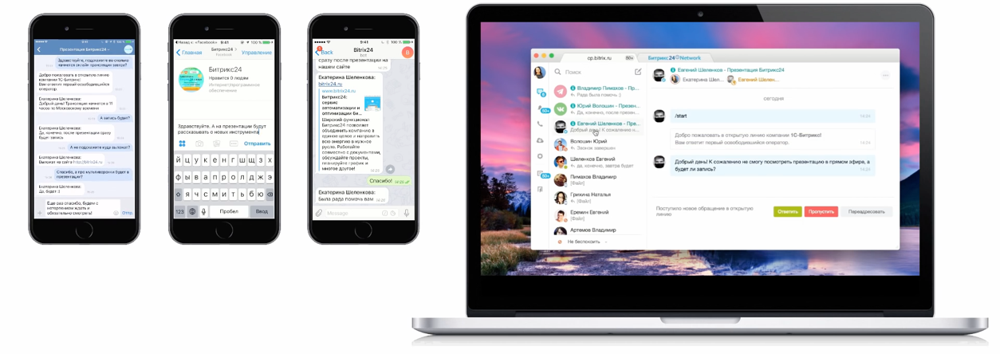
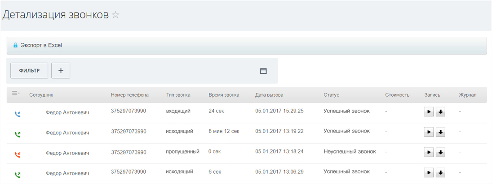

Пользователь может оставить заявку через чат, соц. сети , месенджеры, позвонить или заполнить форму на сайте. Часто заявки теряются - бизнес недозарабатывает. Битрикс 24 автоматически собирает все обращения в одном месте- ни один клиент больше не потеряется.
Клиент позвонил, написал на почту или заполнил форму на сайте - Битрикс 24 автоматически создаст новый лид в вашей базе
Если пользователю удобнее сделать заказ через соц. сети, мессенджер или с помощью чата на сайте - лид также создастся автоматически. А менеджер увидит сообщение в чате Битрикс 24 и сможет ответить прячмо оттуда.
Если пользователь в письме или чате упоминает свои контактніе данные (например, почту или номер телефона), Битрикс24 автоматически заносит их в карточку клиента.
Каждый пропущеный звонок фиксируется в системе. Если клиент уже есть в вашей базе - звонок добавляется автоматически
Что бы обращения не оставались без ответа, Битрикс 24 может автоматически назначать ответственного менеджера и ставить ему задачу ( например , позвонить или отправить письмо), или даже делать это без участия менеджера
Регистрация занимает всего 1 минуту
начать бесплатно